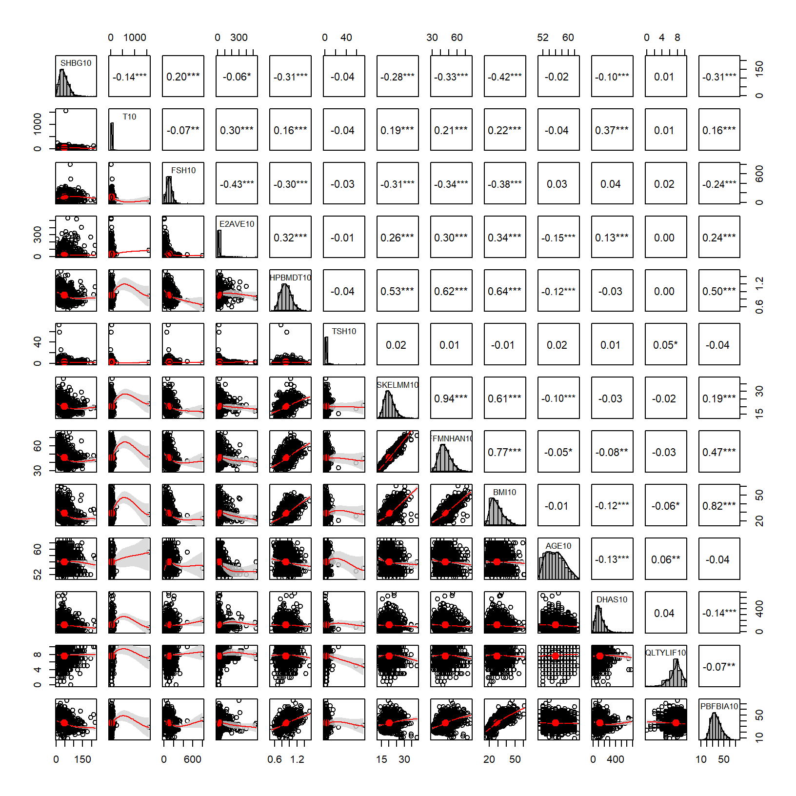
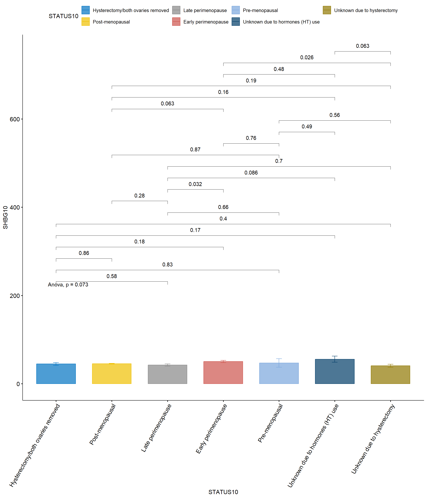

4 “r” Spearman correlation for continuous variables.
“r” > 0: direct relation. “r” < 0: inverse relation. “r” = 0: no relation.
-0.25<“r”<0.25: bad predictor
-0.5<“r”<-0.25 or 0.25<“r”<0.5: poor predictor
-0.5<“r”<-0.75 or 0.5<“r”<0.75: good predictor
“r”<-0.75 or “r”>0.75: excellent predictor.
Code
pairs.panels(SWANVISIT10[,1:11],smooth =TRUE, # If TRUE, draws loess smoothsscale =FALSE, # If TRUE, scales the correlation text fontdensity =TRUE, # If TRUE, adds density plots and histogramsellipses =TRUE, # If TRUE, draws ellipsesmethod ="spearman", # Correlation method (also "spearman" or "kendall")pch =21, # pch symbollm =FALSE, # If TRUE, plots linear fit rather than the LOESS (smoothed) fitcor =TRUE, # If TRUE, reports correlationsjiggle =FALSE, # If TRUE, data points are jitteredfactor =2, # Jittering factorhist.col ="grey70", # Histograms colorstars =TRUE, # If TRUE, adds significance level with starsci =TRUE) # If TRUE, adds confidence intervals

*: p value < 0.05
**: p value < 0.01
***: p value < 0.001
5 Generalized linear regression models (GLM) for dependent variable: SHBG.
5.1 Independent variable: Hormones + AGE + STATUS.
comparaciones <-list(c("Hysterectomy/both ovaries removed", "Late perimenopause"),c("Hysterectomy/both ovaries removed", "Pre-menopausal"),c("Hysterectomy/both ovaries removed", "Post-menopausal"),c("Hysterectomy/both ovaries removed", "Early perimenopause"),c("Hysterectomy/both ovaries removed", "Unknown due to hormones (HT) use"),c("Hysterectomy/both ovaries removed", "Unknown due to hysterectomy"),c("Late perimenopause", "Pre-menopausal"),c("Late perimenopause", "Post-menopausal"),c("Late perimenopause", "Early perimenopause"),c("Late perimenopause", "Unknown due to hormones (HT) use"),c("Late perimenopause", "Unknown due to hysterectomy"),c("Pre-menopausal", "Post-menopausal"),c("Pre-menopausal", "Early perimenopause"),c("Pre-menopausal", "Unknown due to hormones (HT) use"),c("Pre-menopausal", "Unknown due to hysterectomy"),c("Post-menopausal", "Early perimenopause"),c("Post-menopausal", "Unknown due to hormones (HT) use"),c("Post-menopausal", "Unknown due to hysterectomy"),c("Early perimenopause", "Unknown due to hormones (HT) use"),c("Early perimenopause", "Unknown due to hysterectomy"),c("Unknown due to hormones (HT) use", "Unknown due to hysterectomy"))ggbarplot(SWANVISIT10 %>%drop_na(STATUS10), x ="STATUS10", y ="SHBG10",add ="mean_se", # Agregar media y error estándarcolor ="STATUS10", fill ="STATUS10", # Colorear según STATUS10palette ="jco", alpha=0.7) +# Elegir una paleta de coloresstat_compare_means(method ="anova") +# Realizar ANOVAstat_compare_means(comparisons = comparaciones,method ="t.test", p.adjust.method ="bonferroni") +# Ajustar con Bonferronitheme(axis.text.x =element_text(angle =60, hjust =1))# Ajustar con Bonferroni

Code
ggbarplot(SWANVISIT10 %>%drop_na(STATUS10), x ="STATUS10", y ="SKELMM10",add ="mean_se", # Agregar media y error estándarcolor ="STATUS10", fill ="STATUS10", # Colorear según STATUS10palette ="jco", alpha=0.7) +# Elegir una paleta de coloresstat_compare_means(method ="anova") +# Realizar ANOVAstat_compare_means(comparisons = comparaciones,method ="t.test", p.adjust.method ="bonferroni") +# Ajustar con Bonferronitheme(axis.text.x =element_text(angle =60, hjust =1)) # Ajustar con Bonferroni